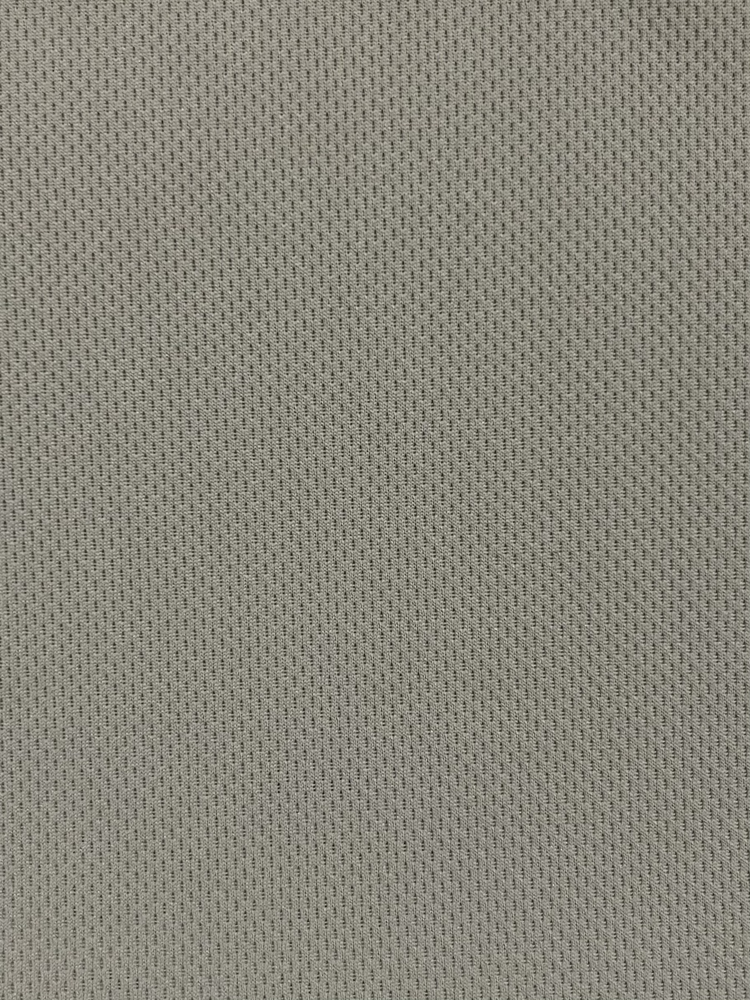

01
Air Classic
Soft fleece platforms for reliable thermal comfort, lining systems, and outdoor mid-layers.
Cloudjade Outdoor Performance Fabric
A technical fabric system for base layers, fleece insulation, cooling comfort, and recycled development stories.



Our fabrics
Technology map
Soft fleece platforms for reliable thermal comfort, lining systems, and outdoor mid-layers.

Dynamic stretch knits designed for next-to-skin comfort, recovery, and active movement.

Heavier warmth and loft options for cold-weather fleece, insulation, and winter layering.

Recycled performance stories that support lighter-impact fabric development.
Insulation
Classic 100, 200, and 300 cover light warmth, technical mid-layer fleece, and heavier cold-weather systems.
Base layer
Air Stretch and ChilyTech focus on stretch recovery, moisture management, cooling comfort, and active movement.
All fabrics
Why choose us?